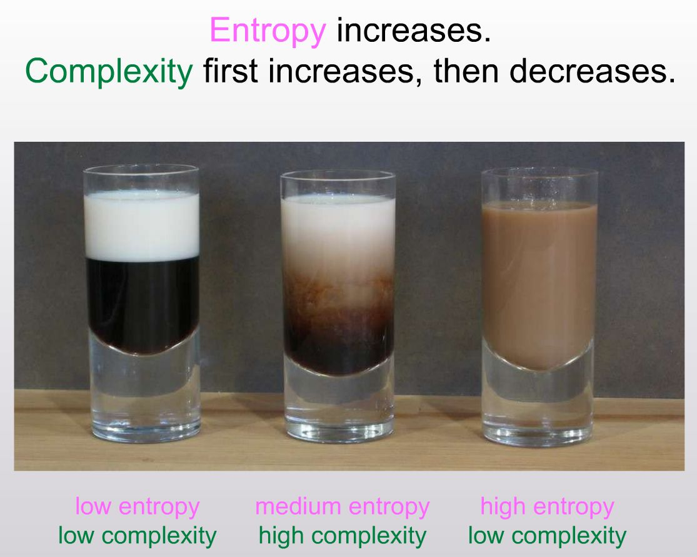

Complexodynamics
The beautiful moment of high complexity
Why does “complexity” or “interestingness” of physical systems seem to increase with time and then hit a maximum and decrease, in contrast to the entropy, which of course increases monotonically?
Look at Scott Aaronson’s cup of coffee. At first, the liquids are completely separated (how did he do that?). Then the cream swirls into the coffee. It’s both beautiful and complex. Then,I’m being snarky, but the moment in cosmological time we’re in is very much the swirling coffee. Early: hot, dense, nearly uniform (low entropy, low complexity). Now: galaxies, stars and planetary systems (medium entropy, high complexity). Far future: in the heat-death scenario, cold, dilute and nearly featureless (high entropy, low complexity). the heat death of the coffee: maximum entropy but complete uniformity.

I wonder if it’s the same intellectual draw I have to simulated annealing. I first read about it in Algorithms to Live By.Scott Aaronson writes about the definition of complextropy, and how it is almost certainly computationally intractable to measure or even approximate. But either way, the moment of maximum complextropy is a moment I keep finding and optimizing for.
Working in a startup, especially doing market discovery, category creation, early forward deployed engineering and product management, you see complexity emerge. Then you get to scaffold around that complexity to create that ordered entropy in the last cup.
- Source:
- Aaronson, Scott. (2011). “The First Law of Complexodynamics.” Shtetl-Optimized, September 23.